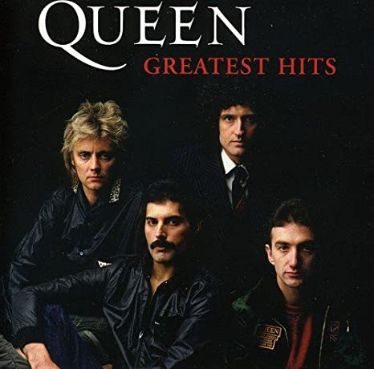

Best seller albums

Greatest Hits I 1981
Sales: 25,000,000 copies

Made in heaven 1995
Sales: 20,000,000 copies
Greatest Hits II 1991
Sales: 19,000,000 copies
- Freddie mercury
Queen, British rock band whose fusion of heavy metal, glam rock, and camp theatrics made it one of the most popular groups of the 1970s. Although generally dismissed by critics, Queen crafted an elaborate blend of layered guitar work by virtuoso Brian May and overdubbed vocal harmonies enlivened by the flamboyant performance of front man and principal songwriter Freddie Mercury.
Their earliest works were influenced by progressive rock, hard rock and heavy metal, but the band gradually ventured into more conventional and radio-friendly works by incorporating further styles, such as arena rock and pop rock.
Members
Awards
Legacy
Sales: 25,000,000 copies
Sales: 20,000,000 copies
Sales: 19,000,000 copies
Featured on their 1978 album Jazz that was released as a single in 1979. Written by lead singer Freddie Mercury, it was recorded in August 1978 at Super Bear Studios in Berre-les-Alpes (Alpes-Maritimes), France, and is the twelfth track on the album.
PlayWritten by the lead singer/pianist Freddie Mercury. It reached No. 2 in the UK and No. 13 on the Billboard Hot 100 in the US. The song demonstrated that "Queen could swing as hard as it could rock, by channeling the spirit of gospel music".
PlayWritten by Freddie Mercury about his then fiance Mary Austin. After Queen performed the song in South America in 1981, the version from their live album Live Killers reached number 1 in the singles chart in Argentina and Brazil, and stayed in the charts in both countries for an entire year.
PlayWritten by their drummer Roger Taylor. The song, which makes a nostalgic defence of the radio format, was a worldwide success for the band, reaching number one in 19 countries, number two on the UK Singles Chart and the Australian Kent Music Report and number 16 on the US Billboard Hot 100.
PlayWritten by guitarist Brian May, the song appears on the band's seventh studio album Jazz (1978) and later on their compilation album Greatest Hits. The song is formed around an open bluesy, metallic guitar tuning, and opens with its chorus. It was one of the few Queen songs played in an alternative (drop D) guitar tuning.
PlayWritten by bassist John Deacon, the song was featured on the group's eighth studio album The Game (1980). It was a worldwide hit, charting number one on the US Billboard Hot 100 for three weeks, from 4 October to 18 October (being their second and final number-one single in the country).
PlayCopy right © Sofía. University Project